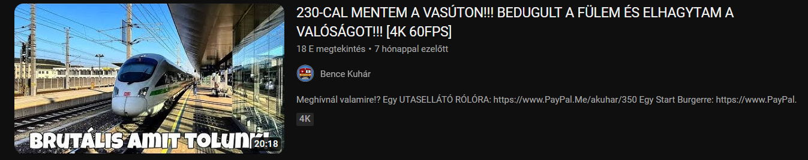
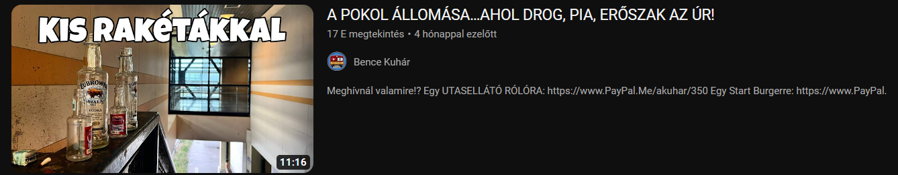

Bence Kuhárnak több beugrása volt már. De mi is az a beugrás?
Beugrás: A Beugrás egy vicces nem megszokott megnyilvánulás egy személytől. Lehet ez káromkodás, fura vagy nem számított kijelentés.
Ahogy a híres Raven Croacks mondaná: Ez itt rósz itt most.
„Mi ez? Peppa Malac, vagy mi?”
„Na szisszentünk egy kis sört.”
„Na nekem nem kéne itt lennem.”
*kinyitja az ajtót*
„Nem vagyok hót részeg, de azért pattintottam egy Temesvár sört amit egyébként Romániába vettem még és van nálam pár csuk is és szerintem egyébként szisszenni is fog.”
„230-CAL MENTEM A VASÚTON!!! BEDUGULT A FÜLEM ÉS ELHAGYTAM A VALÓSÁGOT!![4K 60FPS]”
„A POKOL ÁLLOMÁSA...AHOL DROG, PIA, ERŐSZAK AZ ÚR!”
